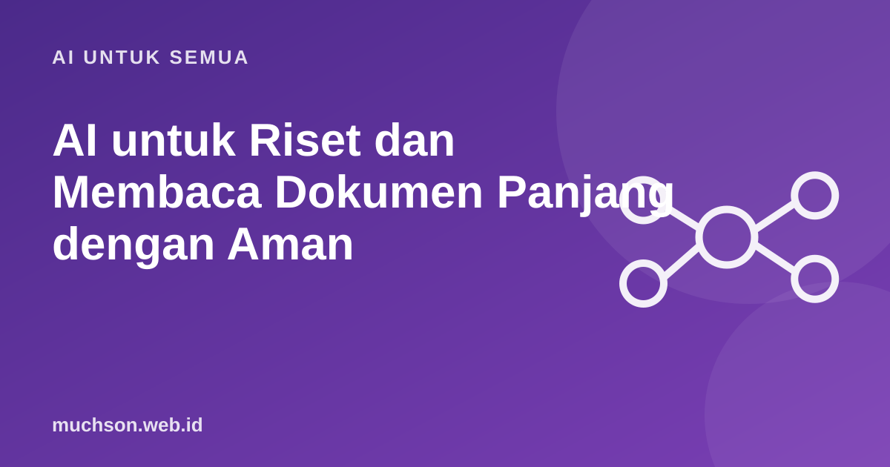

Beranda › Artikel › AI untuk Semua
AI untuk SemuaAI untuk Riset dan Membaca Dokumen Panjang dengan Aman
Salah satu kemampuan yang paling berguna dari asisten AI adalah membaca dokumen panjang dan menjawab pertanyaan tentangnya. Hasilnya cepat, tetapi tetap perlu disiplin: ringkasan bukan pengganti sumber asli.

Alur kerja yang aman
Pertanyaan yang menghasilkan jawaban baik
| Tujuan | Contoh pertanyaan |
|---|---|
| Gambaran umum | Apa masalah yang dibahas, metode, dan kesimpulan utama dokumen ini? |
| Mencari bagian tertentu | Di bagian mana dokumen membahas biaya? Kutip kalimat aslinya. |
| Menguji klaim | Apakah dokumen ini mendukung pernyataan bahwa X? Tunjukkan buktinya atau katakan tidak ada. |
| Membandingkan | Bandingkan pendekatan di dokumen A dan B dalam tabel. |
| Mencari kelemahan | Apa batasan atau asumsi yang dipakai penulis? |
Jangan percaya buta
Aturan emas: untuk setiap angka atau kutipan penting yang Anda pakai, buka dokumen aslinya dan periksa sendiri. Ringkasan AI bisa salah membaca atau melewatkan konteks.
Batasan dokumen panjang
Asisten AI hanya dapat memproses sejumlah teks tertentu dalam satu percakapan (disebut jendela konteks). Dokumen yang sangat panjang bisa terpotong atau sebagian terlupakan. Pecah dokumen menjadi bagian dan tanya per bagian, atau gunakan sistem pencarian dokumen (RAG) bila dokumennya banyak.
Tanya jawab
Apakah AI bisa membaca PDF hasil scan?
Tergantung apakah layanan mengenali teks (OCR). Hasilnya lebih baik pada scan yang jelas. Periksa hasilnya.
Apakah aman mengunggah dokumen internal?
Ikuti kebijakan organisasi dan layanan. Dokumen rahasia sebaiknya hanya diproses di layanan yang disetujui.
Bagaimana bila AI menjawab sesuatu yang tidak ada di dokumen?
Itu halusinasi. Minta ia hanya menjawab dari dokumen dan mengatakan tidak ada bila tidak ditemukan.